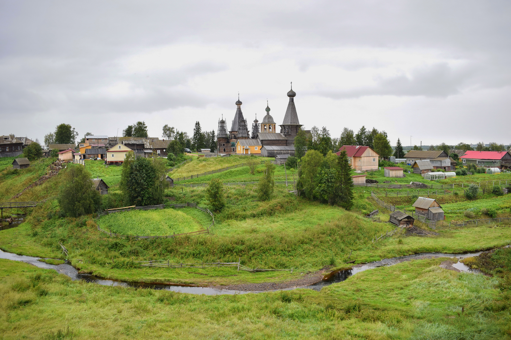
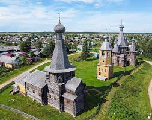
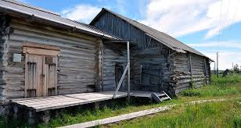

Посад Нёнокса — одно из старейших поселений на Летнем берегу Белого моря, известное по летописям с 1397 года. На протяжении веков это место было крупнейшим центром солеварения на Русском Севере. Здешняя «белая соль» (ключевка) ценилась по всей России за свою исключительную чистоту и поставлялась к царскому столу. Добыча велась из подземных рассольных источников с помощью уникальных глубоких деревянных колодцев и труб.

Главная архитектурная гордость Нёноксы — знаменитый деревянный пятишатровый храм Живоначальной Троицы, построенный в 1727 году. Это единственный в мире сохранившийся деревянный храм такого типа. Его сложная геометрия, центральный шатер и четыре окружающих его прируба со своими шатрами создают монументальный и неповторимый силуэт, поражающий исследователей деревянного зодчества.

Сегодня в Нёноксе работает филиал Архангельского краеведческого музея — Музей соли. Здесь воссоздана атмосфера старинного солеваренного завода, можно увидеть макеты рассолоподъемных башен и узнать технологию выварки соли в чренах, которая кормила сотни поморских семей.
